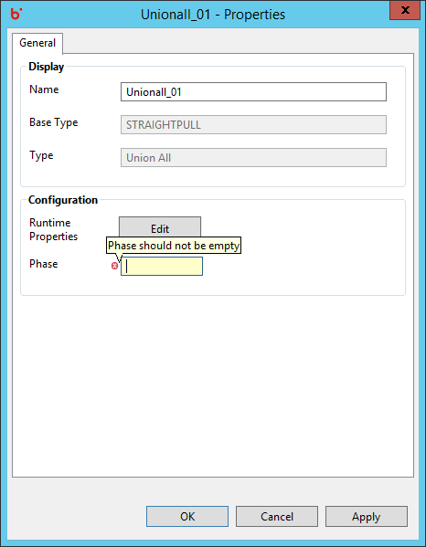

Accelero Help
Accelero Help
Remove Dups Validations
Accelero Release Version 1.0
Validations for the Remove Dups component are in place for each property present on the Properties window.
General Properties:
- Key Fields - Key Field value cannot remain empty. Appropriate Error message is displayed on keeping a field blank in the Key Fields Grid.
- Key Fields - Secondary Key Field value cannot remain empty. Appropriate Error message is displayed on keeping a field blank in the Grid.
- Phase -Phase has a default value of 0. However, blank text box results in error validation and is not allowed.
